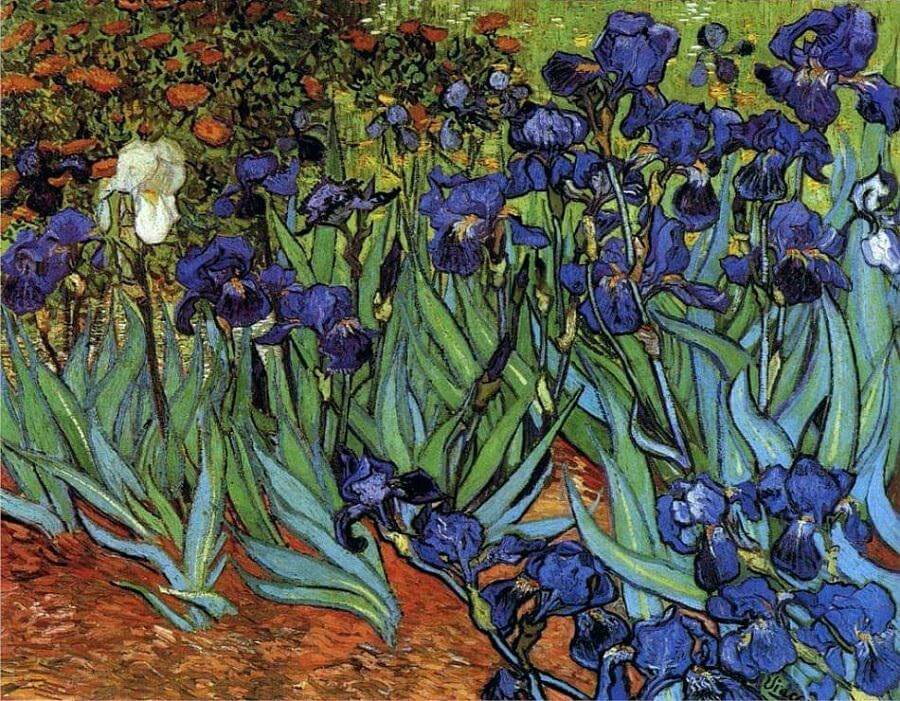
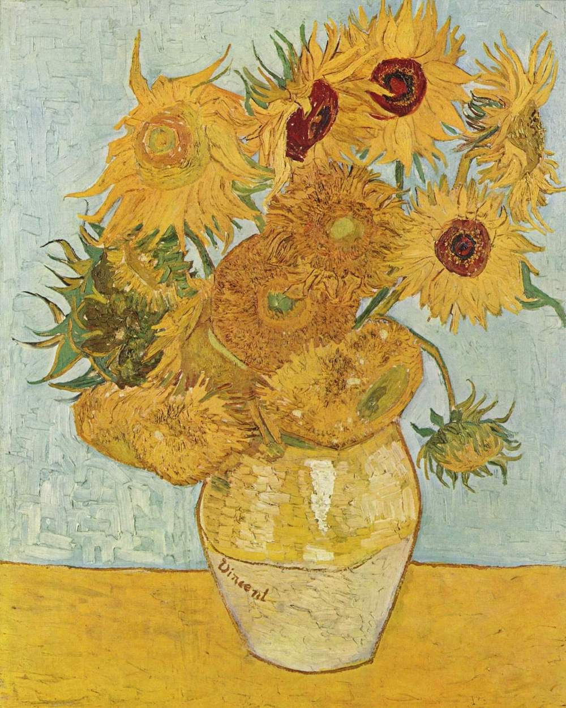

Notable Works

Starry Night 1889

Irises 1889

The Bedroom 1889

Café Terrace at Night 1888

Sunflowers 1888
"Normality is a paved road: It’s comfortable to walk but no flowers grow on it."
"Great things are not done by impulse but by a series of small things brought together."
"If you hear a voice within you say 'you cannot paint,' then by all means paint, and that voice will be silenced."
"I am seeking. I am striving. I am in it with all my heart."
Vincent van Gogh
1853-1890
Vincent van Gogh, born on March 30, 1853, in Zundert, Netherlands, was
a Dutch Post-Impressionist painter who is widely considered one of the
most influential figures in Western art. Despite facing numerous
personal challenges and struggling with mental health issues, van Gogh
produced an extensive body of work that has had a profound impact on
the art world.
Van Gogh began his artistic journey relatively late in life, taking up
painting in his late twenties. His early works were influenced by the
Dutch Masters and the Barbizon school, but he later developed a unique
and recognizable style characterized by bold colors, dramatic
brushstrokes, and emotional intensity.
The artist's life was marked by poverty, emotional turbulence, and
frequent moves between cities in Europe. He spent time in Paris, where
he interacted with other prominent artists of the time, including Paul
Gauguin. The famous incident in which van Gogh famously severed his
own ear during a bout of mental distress occurred in Arles in 1888.
Despite his struggles, van Gogh created some of his most iconic works
during the last few years of his life, including "Starry Night,"
"Irises," and "Sunflowers." Tragically, he succumbed to mental illness
and died on July 29, 1890, at the age of 37, never having achieved
widespread recognition during his lifetime.
Posthumously, Vincent van Gogh's contributions to art have been
celebrated, and he is now regarded as one of the most influential and
revered figures in the history of Western art. His legacy endures
through the timeless beauty and emotional depth of his paintings.
Vincent van Gogh's artistic style is characterized by bold colors,
expressive brushstrokes, and emotional intensity. He was a
Post-Impressionist painter who departed from the traditional artistic
techniques of his time. Van Gogh used vivid and often contrasting
colors to convey emotion and atmosphere in his works. His brushstrokes
were dynamic and visible, adding a sense of movement and energy to his
paintings.
Van Gogh's unique approach to texture and form, such as the thick
application of paint (impasto), created a tactile quality in his
works. His compositions often featured everyday subjects like
landscapes, portraits, and still life, transformed through his
distinctive interpretation.
Over time, van Gogh's style evolved, reflecting his emotional and
mental state. His later works, like "Starry Night," are particularly
known for their swirling, turbulent compositions and intense colors.
Despite facing personal challenges, van Gogh's innovative and
expressive style has had a profound and lasting influence on the art
world.
Starry Night 1889
Irises 1889
The Bedroom 1889
Café Terrace at Night 1888
Sunflowers 1888